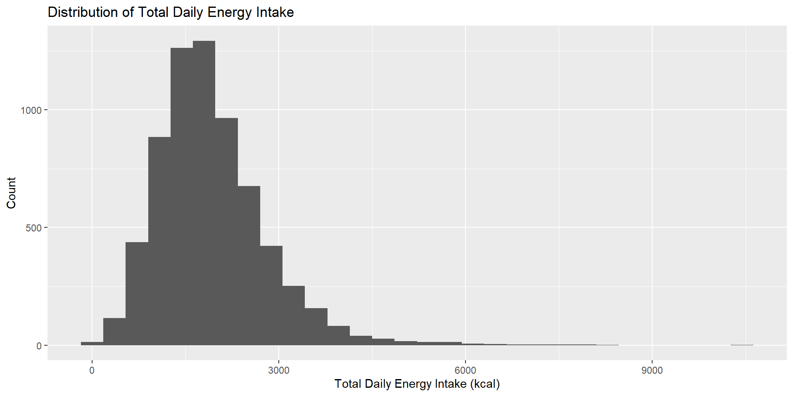
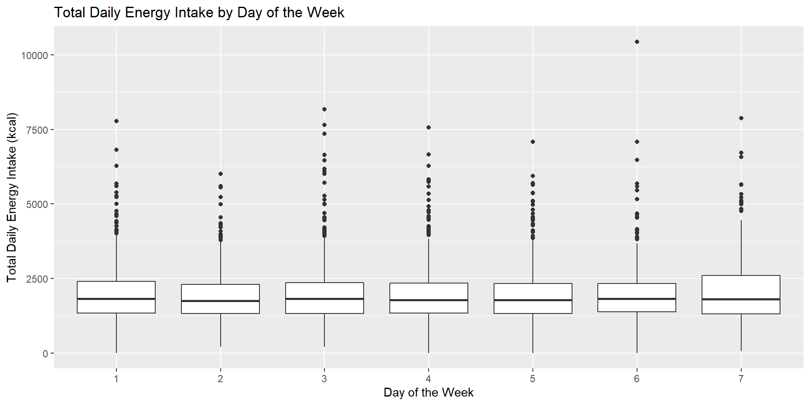
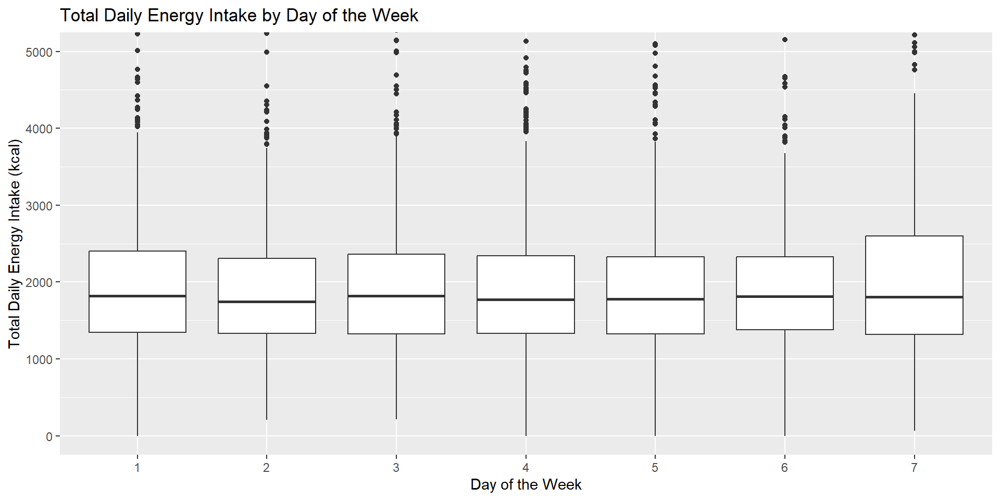
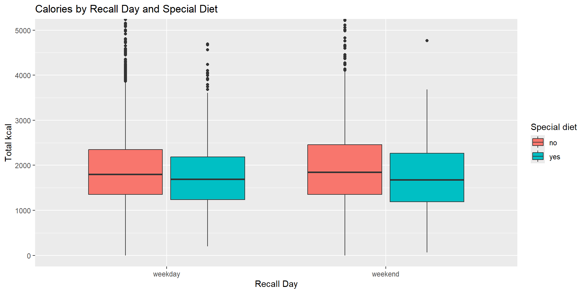
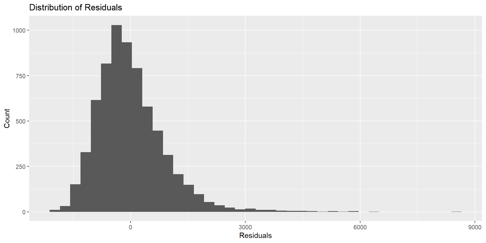
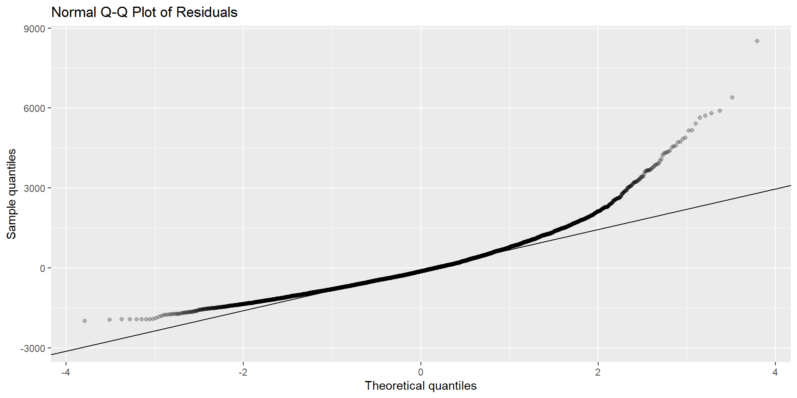
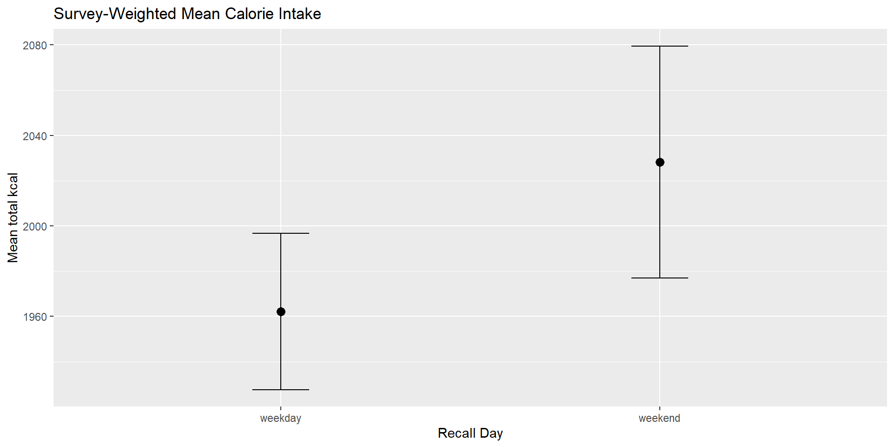
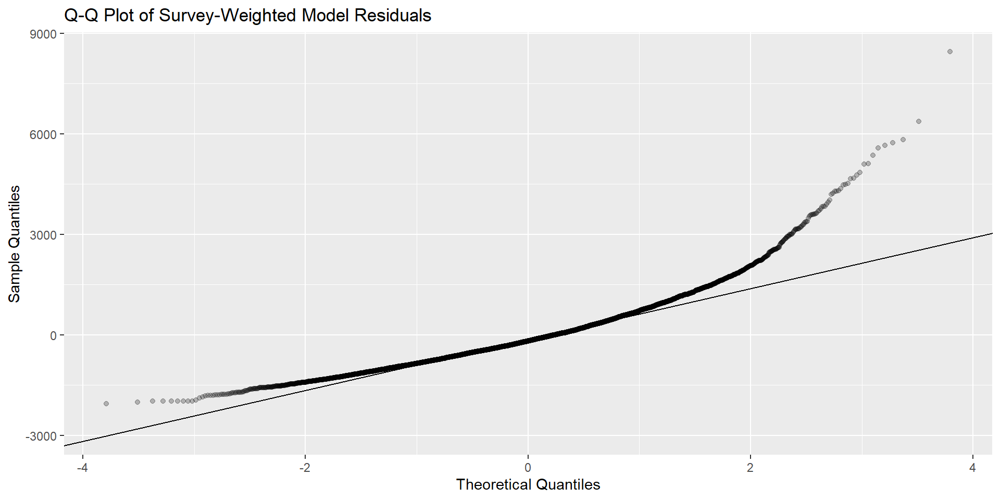

This project examines whether reported total daily calorie intake differs between weekday and weekend dietary recalls among National Health and Nutrition Examination Survey (NHANES) participants. I used NHANES August 2021–August 2023 Day 1 dietary recall data.
The dependent variable is total daily energy intake in kilocalories, and the main independent variable is whether the recall occurred on a weekday or weekend. I also included special diet status as an additional explanatory variable. I compared groups using summary statistics, visualizations, a two-sample t-test, a permutation test, and a survey-weighted regression model.
Weekend recalls showed slightly higher average calorie intake than weekday recalls, and this difference remained after accounting for special diet status and NHANES survey design. However, the size of the difference was small relative to the overall variation in calorie intake.
\[ H_0: \mu_{\text{weekday}} = \mu_{\text{weekend}} \] Null Hypothesis: There is no difference in average total daily calorie intake between weekday and weekend recalls.
\[ H_A: \mu_{\text{weekday}} \ne \mu_{\text{weekend}} \] Alternative Hypothesis: There is a difference in average total daily calorie intake between weekday and weekend recalls.
tidyverse: Used for data cleaning, transformation, summaries, and plotting.infer: Used for simulation-based inference and hypothesis testing.haven: Used to read NHANES .xpt data files.df <- read_xpt("https://wwwn.cdc.gov/Nchs/Data/Nhanes/Public/2021/DataFiles/DR1TOT_L.xpt") |>
select(
day_of_week = DR1DAY,
recall_status = DR1DRSTZ,
total_kcal = DR1TKCAL,
special_diet_raw = DRQSDIET
) |>
filter(
recall_status == 1,
day_of_week %in% 1:7,
!is.na(total_kcal),
special_diet_raw %in% c(1, 2)
) |>
mutate(
weekend = ifelse(day_of_week %in% c(1, 7), "weekend", "weekday"),
weekend = factor(weekend, levels = c("weekday", "weekend")),
special_diet = ifelse(special_diet_raw == 1, "yes", "no"),
special_diet = factor(special_diet, levels = c("no", "yes"))
)day_of_week: Numeric NHANES code for the day the dietary recall was collected.recall_status: Indicates whether the dietary recall was reliable and complete.total_kcal: Total reported daily energy intake in kilocalories.special_diet_raw: Original NHANES code for whether the participant reported being on a special diet.weekend: Cleaned variable classifying the recall day as weekday or weekend.special_diet: Cleaned variable classifying special diet status as yes or no.# A tibble: 2 × 11
weekend n mean_kcal sd_kcal se_kcal lower upper median_kcal iqr_kcal
<fct> <int> <dbl> <dbl> <dbl> <dbl> <dbl> <dbl> <dbl>
1 weekday 5034 1910. 877. 12.4 1886. 1934. 1780 1000.
2 weekend 1657 1962. 929. 22.8 1917. 2006. 1815 1110
# ℹ 2 more variables: min_kcal <dbl>, max_kcal <dbl>From the summary statistics on total_kcal we can see that the weekend does have a higher mean, standard deviation, and median than the weekdays.
Weekday mean: 1909.96 kcal
Weekend mean: 1961.66 kcal
Difference: about 51.7 kcal higher on weekends
# A tibble: 4 × 6
weekend special_diet n mean_kcal sd_kcal median_kcal
<fct> <fct> <int> <dbl> <dbl> <dbl>
1 weekday no 4403 1925. 875. 1798
2 weekday yes 631 1806. 883. 1689
3 weekend no 1430 1992. 942. 1849
4 weekend yes 227 1768. 814. 1679Participants not on a special diet reported higher average calorie intake in both groups:
The highest average intake was among weekend recalls for participants not on a special diet.
The lowest average intake was among weekend recalls for participants on a special diet.



Saturday and Sunday show slightly wider calorie distributions than many weekdays.
Saturday especially appears to have a larger spread, with a wider IQR and more high intake values.
However, the medians across all seven days are fairly similar, so the main difference seems to be in variability rather than a large shift in typical intake.
Welch Two Sample t-test
data: total_kcal by weekend
t = -1.9929, df = 2693.8, p-value = 0.04638
alternative hypothesis: true difference in means between group weekday and group weekend is not equal to 0
95 percent confidence interval:
-102.5831053 -0.8312215
sample estimates:
mean in group weekday mean in group weekend
1909.957 1961.664 The Welch two-sample t-test found a statistically significant difference in mean calorie intake between weekday and weekend recalls.
Weekend recalls averaged about 52 kcal higher than weekday recalls.
Because the p-value is below 0.05, I reject the null hypothesis. However, the difference is small in practical terms.
set.seed(123)
obs_diff <- df |>
specify(total_kcal ~ weekend) |>
calculate(stat = "diff in means", order = c("weekend", "weekday"))
null_dist <- df |>
specify(total_kcal ~ weekend) |>
hypothesize(null = "independence") |>
generate(reps = 10000, type = "permute") |>
calculate(stat = "diff in means", order = c("weekend", "weekday"))
null_dist |>
get_p_value(obs_stat = obs_diff, direction = "two_sided")# A tibble: 1 × 1
p_value
<dbl>
1 0.0392Both tests gave p-values below 0.05, so the conclusion was consistent: there is evidence of a difference in mean calorie intake between weekday and weekend recalls.

Call:
lm(formula = total_kcal ~ weekend + special_diet, data = df)
Residuals:
Min 1Q Median 3Q Max
-1981.8 -589.0 -128.8 437.5 8517.7
Coefficients:
Estimate Std. Error t value Pr(>|t|)
(Intercept) 1928.34 13.17 146.423 < 2e-16 ***
weekendweekend 53.42 25.17 2.122 0.0339 *
special_dietyes -146.66 32.49 -4.513 6.49e-06 ***
---
Signif. codes: 0 '***' 0.001 '**' 0.01 '*' 0.05 '.' 0.1 ' ' 1
Residual standard error: 888.6 on 6688 degrees of freedom
Multiple R-squared: 0.003664, Adjusted R-squared: 0.003366
F-statistic: 12.3 on 2 and 6688 DF, p-value: 4.673e-06
The residuals are centered near 0 but strongly right-skewed, with several large positive residuals. This means the model underpredicts calorie intake for some high-intake participants.

Residuals are not perfectly normal, especially in the upper tail. This reflects high-calorie outliers and the right-skewed shape of dietary intake.
Participants reported significantly higher mean energy intake on weekend days (1962 kcal) compared with weekdays (1910 kcal; difference = 52 kcal, permutation p = 0.039). This difference remained after adjustment for special diet (adjusted difference = 53 kcal, p = 0.034).
Layman: People eat more calories on the weekends than during the week — roughly 50 extra calories per day on average.”
Limitation: Because calorie intake was highly variable and right-skewed, the regression model should be interpreted cautiously.
National Health and Nutrition Examination Survey (NHANES) uses a complex, multistage, stratified, cluster sampling design. Because of this, analyses should use survey weights, strata, and cluster variables to produce more accurate population estimates.
weight_day1: the NHANES Day 1 dietary recall weight, used to make dietary intake estimates more representative of the U.S. populationSDMVPSU: the primary sampling unit, or cluster, used in the NHANES sample design.SDMVSTRA: the survey stratum, or sampling group, used to organize the sample design.The DEMO_L file contains NHANES demographic and survey design variables, including the strata and cluster variables needed for survey-weighted analysis.
library(survey)
diet <- read_xpt("https://wwwn.cdc.gov/Nchs/Data/Nhanes/Public/2021/DataFiles/DR1TOT_L.xpt")
demo <- read_xpt("https://wwwn.cdc.gov/Nchs/Data/Nhanes/Public/2021/DataFiles/DEMO_L.xpt")
df_svy <- diet |>
select(
SEQN,
day_of_week = DR1DAY,
recall_status = DR1DRSTZ,
total_kcal = DR1TKCAL,
special_diet_raw = DRQSDIET,
weight_day1 = WTDRD1
) |>
left_join(
demo |> select(SEQN, SDMVSTRA, SDMVPSU),
by = "SEQN"
) |>
filter(
recall_status == 1,
day_of_week %in% 1:7,
!is.na(total_kcal),
special_diet_raw %in% c(1, 2),
weight_day1 > 0
) |>
mutate(
weekend = factor(
ifelse(day_of_week %in% c(1, 7), "weekend", "weekday"),
levels = c("weekday", "weekend")
),
special_diet = factor(
ifelse(special_diet_raw == 1, "yes", "no"),
levels = c("no", "yes")
)
)The svydesign() function creates a survey design object so R can account for NHANES weights, strata, and clusters when estimating means or fitting regression models.
svyby() calculates a survey-weighted statistic separately by group.

Weekday weighted mean: 1,962 kcal
Weekend weighted mean: 2,028 kcal
Difference: about 66 kcal higher on weekends
After applying NHANES survey weights, weekend recalls still had higher average reported calorie intake than weekday recalls. This matches the pattern from the unweighted analysis, but the weighted results better account for the NHANES survey design.
svyglm() fits a regression model while accounting for the survey design.
Call:
svyglm(formula = total_kcal ~ weekend + special_diet, design = nhanes_design)
Survey design:
svydesign(ids = ~SDMVPSU, strata = ~SDMVSTRA, weights = ~weight_day1,
nest = TRUE, data = df_svy)
Coefficients:
Estimate Std. Error t value Pr(>|t|)
(Intercept) 1984.27 17.75 111.779 < 2e-16 ***
weekendweekend 67.80 31.09 2.181 0.04814 *
special_dietyes -174.51 46.43 -3.758 0.00239 **
---
Signif. codes: 0 '***' 0.001 '**' 0.01 '*' 0.05 '.' 0.1 ' ' 1
(Dispersion parameter for gaussian family taken to be 841118.7)
Number of Fisher Scoring iterations: 2
After accounting for NHANES survey weights, strata, and clusters, participants had higher mean energy intake on weekend days compared with weekdays.
Layman: Even after accounting for NHANES survey design and special diet status, people reported eating slightly more calories on weekends — about 68 extra calories per day on average.